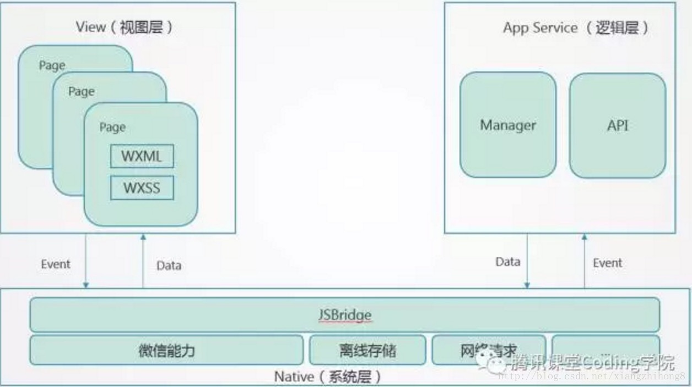
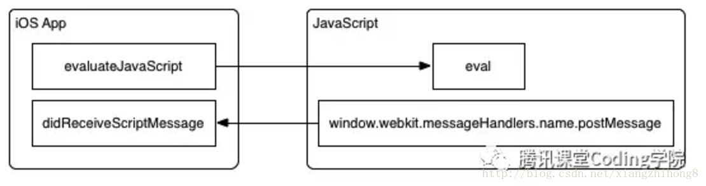

小程序
block的使用
可以使用block元素来包含html块而不产生新的view
分包目录结构
1 | ├── pages |
路由封装
如果需要使用新的路由，首先在pathMap中注册一下
使用方式(已经在Vue的原型上注册了)
1
2// you can choose what arguments you pass as you need.
this.$goto('your pathName')实现原理
1
2
3
4
5
6
7
8
9
10
11
12
13
14
15
16
17
18
19
20
21
22
23
24
25
26
27
28
29
30
31
32
33
34
35
36
37
38
39
40
41
42
43
44
45
46
47
48
49
50
51
52/**
* 所有页面路由封装
* pathName: 路径名，在pathMap中注册就行了
* payload: 路径携带的query
* type: 跳转方式，默认navigateTo
*/
export const goto = (pathName = '', payload = {}, type = 'navigateTo') => {
const pathMap = {
pages: {
main: '/pages/',
kids: [
'bulls',
'lastBet',
'optionals',
'recommend',
'score',
'search',
'shareFeedback',
'shareIndex',
'stock'
]
},
subpages: {
main: '/pages/subpages/',
kids: [
'rank/pages/rank'
]
}
}
const makePath = () => {
let finallyPath = ''
const query = querify(payload)
const findPath = (kind) => {
const kidsMap = pathMap[kind].kids
for (let i = 0; i < kidsMap.length; i++) {
if (kidsMap[i] === pathName) {
return pathMap[kind].main + pathName + '/main' + query
}
}
}
if (pathName.indexOf('/') > -1) {
finallyPath = findPath('subpages')
} else {
finallyPath = findPath('pages')
}
if (!finallyPath) return console.error('you have not register ' + pathName + ' in `pathMap`, please register it.')
return finallyPath
}
wx[type]({
url: makePath()
})
}
navigator 组件
如果使用extra-data，需要使用v-if控制组件的显示和隐藏，在获取数据之后更新extra-data对象，且这个东西初始化必须是一个对象
也可以直接拼接path，这种方式比较简单，path初始化为空字符串
canvas绘制图片
如何绘制网络图片
获取网络图片的本地缓存路径，使用这个缓存路径绘制图片就行了1
2
3
4
5
6
7
8makeLocalPath (cb, imgHttpUrl) {
wx.getImageInfo({
src: imgHttpUrl,
success: function (res) {
cb(res.path)
}
})
}
分包机制
更新package.json
1
2"mpvue-loader": "^1.1.2-rc.5"
"webpack-mpvue-asset-plugin": "^0.1.1"修改相应文件
注意事项
- src之外不能放置其它的静态资源文件夹
- 注意package.json的更新，一定要是最新版本
- 图片统一import进来，不要用dist路径
pages新增main.json
1
2
3
4{
"navigationBarTextStyle": "white",
"navigationBarTitleText": "我看涨"
}如何定向
1
2
3
4
5lead2test () {
wx.navigateTo({
url: '/pages/test/counter/main'
})
}
多个分包
目前全部写在pages，正好可以很方便的公用资源1
2
3
4
5
6
7
8
9
10
11
12
13
14
15"subPackages": [
{
"root": "pages/countModel",
"pages": [
"counter/main",
"test/main"
]
},
{
"root": "pages/rankModel",
"pages": [
"rank/main"
]
}
],
版本更新&兼容
- 判断api是否可用：
wx.canIUse(String)，根据这个执行相应的兼容策略 管理小程序更新：
wx.getUpdateManager()- onCheckForUpdate：callback，当向微信后台请求完新版本信息，会进行回调
- onUpdateReady：callback，当新版本下载完成，会进行回调
- onUpdateFailed：callback，当新版本下载失败，会进行回调
- applyUpdate：当新版本下载完成，调用该方法会强制当前小程序应用上新版本并重启
检查更新操作由微信在小程序冷启动时自动触发，不需由开发者主动触发，开发者只需监听检查结果即可。
示例
1 | const updateManager = wx.getUpdateManager() |
生命周期
测试环境：
"mpVue": "^1.0.10"。
不要使用mpVue自带的生命周期，有时候会出现各种预料之外的bug，而且小程序自带的生命周期可以完全满足需求。
运行机制
前台、后台定义： 当用户点击左上角关闭，或者按了设备 Home 键离开微信，小程序并没有直接销毁，而是进入了后台；当再次进入微信或再次打开小程序，又会从后台进入前台。需要注意的是：只有当小程序进入后台一定时间，或者系统资源占用过高，才会被真正的销毁。
关闭小程序（基础库版本1.1.0开始支持）： 当用户从扫一扫、转发等入口(场景值为1007, 1008, 1011, 1025)进入小程序，且没有置顶小程序的情况下退出，小程序会被销毁。
小程序启动会有两种情况，一种是「冷启动」，一种是「热启动」。 假如用户已经打开过某小程序，然后在一定时间内再次打开该小程序，此时无需重新启动，只需将后台态的小程序切换到前台，这个过程就是热启动；冷启动指的是用户首次打开或小程序被微信主动销毁后再次打开的情况，此时小程序需要重新加载启动。
更新机制
小程序冷启动时如果发现有新版本，将会异步下载新版本的代码包，并同时用客户端本地的包进行启动，即新版本的小程序需要等下一次冷启动才会应用上。 如果需要马上应用最新版本，可以使用 wx.getUpdateManager API 进行处理。
销毁机制
小程序没有重启的概念
当小程序进入后台，客户端会维持一段时间的运行状态，超过一定时间后（目前是5分钟）会被微信主动销毁
当短时间内（5s）连续收到两次以上收到系统内存告警，会进行小程序的销毁
再次打开逻辑
基础库 1.4.0 开始支持，低版本需做兼容处理
用户打开小程序的预期有以下两类场景：
A. 打开首页： 场景值有 1001, 1019, 1022, 1023, 1038, 1056
B. 打开小程序指定的某个页面： 场景值为除 A 以外的其他
当再次打开一个小程序逻辑如下：
| 上一次的场景 | 当前打开的场景 | 效果 |
|---|---|---|
| A | A | 保留原来的状态 |
| B | A | 清空原来的页面栈，打开首页（相当于执行 wx.reLaunch 到首页） |
| A 或 B | B | 清空原来的页面栈，打开指定页面（相当于执行 wx.reLaunch 到指定页） |
App
以下钩子函数执行顺序仅限于同步调用，异步调用尽量不要耦合不同钩子函数，会出现依赖失败的情况
onShow: 同步操作，先于onLaunch触发，小程序从后台进入前台显示时，会触发onLaunch: 全局只触发一次，注意：- 这里面的异步操作不能耗时过长，不然会出现
pages-onLoad和pages-onShow先于异步操作触发
- 这里面的异步操作不能耗时过长，不然会出现
onHide: 小程序从前台进入后台显示时，会触发onError: 参数就是报错信息，脚本错误或api调用失败时触发onPageNotFound: 打开的页面不存在时触发
顺序：
- 首次进入：
onShow->onLaunch - 进入后台：
onHide - 再次进入：
onShow - 页面卸载：
- 再次进入：同首次进入
Page
onLoad: 第一个触发，有options，监听页面加载，一个页面只会调用一次，onLoad 的第一个参数包含页面的query。onShow: 第二个触发，监听页面显示，每次打开页面都会调用一次。onReady: 第三个触发，监听页面初次渲染完成，一个页面只会调用一次，代表页面已经准备妥当，可以和视图层进行交互。对界面的设置如wx.setNavigationBarTitle请在onReady之后设置。onHide: 先于App()的onHide事件触发，当navigateTo或底部tab切换时调用。onUnload: 监听页面卸载，一般情况下，不存在页面的卸载，除了长时间未进入小程序，或者删掉小程序，当redirectTo或navigateBack的时候调用，使用其它跳转不会使页面卸载，相反，可能存在缓存，点击左上角返回按钮或者手机上的返回按钮，不会触发这个事件。onPullDownRefresh: 下拉动作，需要先配置可下拉onReachBottom: 上拉触底事件的回调onShareAppMessage: 右上角转发onPageScroll: 页面滚动触发onTabItemTap: tab页点击tab时触发
顺序：
- 首次进入：
onLoad->onShow->onReady - 进入后台：
onHide - 再次进入：
onShow - 页面卸载：
onUnload - 再次进入：同首次进入
component
onLoad: 监听组件加载，有optionsonReady: 监听组件初次渲染完成，注意：只会在初次渲染完成后触发一次，如果没有卸载这个组件，则不会再次触发该事件，所以说这个事件和onShow不会同时触发，如果没有卸载这个组件，则会触发onShow事件onHide: 监听组件从前台进入后台onShow: 监听组件从后台进入前台，注意：首次渲染不触发这个事件，切换回这个组件才会触发这个事件onUnload: 监听组件卸载，当redirectTo或navigateBack的时候调用
顺序：
- 首次加载：
onLoad->onReady - 进入后台：
onHide - 再次进入：
onShow - 卸载：
onUnload - 再次进入：同首次加载
component-child
同component
总体生命周期钩子调用顺序
仅在同步操作情况下
调用哪些钩子同上
- 首次加载：
App->pages->component->component-child - 进入后台：
pages->component->component-child->App - 再次进入：
App->pages->component->componet-child - 卸载：
pages->component->componet-child - 再次进入：同首次加载
上线准备
- 后台安全域名配置
- 提审材料
- 压缩代码（有可能打包之后有些方法和样式不支持，需要排查）
底层原理
参考资料
架构
微信小程序的框架包含两部分View视图层、App Service逻辑层
- View层用来渲染页面结构
- AppService层用来逻辑处理、数据请求、接口调用
- 它们在两个进程（两个Webview）里运行
视图层和逻辑层通过系统层的JSBridage进行通信，逻辑层把数据变化通知到视图层，触发视图层页面更新，视图层把触发的事件通知到逻辑层进行业务处理

- 小程序启动时会从CDN下载小程序的完整包，一般是数字命名的,如：_-2082693788_4.wxapkg
实现
- 小程序的UI视图和逻辑处理是用多个webview实现的，逻辑处理的JS代码全部加载到一个Webview里面，称之为AppService，整个小程序只有一个，并且整个生命周期常驻内存。
- 而所有的视图（wxml和wxss）都是单独的Webview来承载，称之为AppView。
- 所以一个小程序打开至少就会有2个webview进程，正式因为每个视图都是一个独立的webview进程，考虑到性能消耗，小程序不允许打开超过5个层级的页面，当然同是也是为了体验更好。
AppService
可以理解AppService即一个简单的页面，主要功能是负责逻辑处理部分的执行，底层提供一个WAService.js的文件来提供各种api接口，主要是以下几个部分：
消息通信封装为WeixinJSBridge
- 开发环境：window.postMessage
- IOS：WKWebview的window.webkit.messageHandlers.invokeHandler.postMessage
- android：WeixinJSCore.invokeHandler
日志组件Reporter封装
- wx对象下面的api方法
- 全局的App、Page、getApp、getCurrentPages等全局方法
- 还有就是对AMD模块规范的实现
然后整个页面就是加载一堆JS文件，包括小程序配置config，上面的WAService.js（调试模式下有asdebug.js），剩下就是我们自己写的全部的js文件，一次性都加载。
AppView
类似于h5的页面，提供UI渲染，底层提供一个WAWebview.js来提供底层的功能,具体如下：
- 消息通信封装为WeixinJSBridge（同AppService）
- 日志组件Reporter封装
- wx对象下的api，这里的api跟WAService里的还不太一样，有几个跟那边功能差不多，但是大部分都是处理UI显示相关的方法
- 小程序组件实现和注册
- VirtualDOM，Diff和Render UI实现
- 页面事件触发
在此基础上，AppView有一个html模板文件，通过这个模板文件加载具体的页面，这个模板主要就一个方法：$gwx，主要是返回指定page的VirtualDOM，而在打包的时候，会事先把所有页面的WXML转换为ViirtualDOM放到模板文件里，而微信自己写了2个工具wcc（把WXML转换为VirtualDOM）和wcsc（把WXSS转换为一个JS字符串的形式通过style标签append到header里）。
service和view通信
使用消息publish和subscribe机制实现两个Webview之间的通信，实现方式就是统一封装一个WeixinJSBridge对象，而不同的环境封装的接口不一样，具体实现的技术如下：
windows
通过window.postMessage实现
- 使用chrome扩展的接口注入一个contentScript.js，它封装了postMessage方法，实现webview之间的通信，并且也它通过chrome.runtime.connect方式，也提供了直接操作chrome native原生方法的接口
发送消息：
window.postMessage(data, '*')- data里指定 webviewID
接收消息：window.addEventListener(‘message’, messageHandler);
- 消息处理并分发，同样支持调用nwjs的原生能力。
appservice也是通过一个webview实现的，实现原理上跟view一样，只是处理的业务逻辑不一样。
ios
- 通过 WKWebview的window.webkit.messageHandlers.NAME.postMessage实现微信navite代码里实现了两个handler消息处理器：
- invokeHandler: 调用原生能力
- publishHandler: 消息分发
- 通过 WKWebview的window.webkit.messageHandlers.NAME.postMessage实现微信navite代码里实现了两个handler消息处理器：

- Android
- 通过WeixinJSCore.invokeHanlder实现，这个WeixinJSCore是微信提供给JS调用的接口（native实现）
- invokeHandler: 调用原生能力
- publishHandler: 消息分发
- 通过WeixinJSCore.invokeHanlder实现，这个WeixinJSCore是微信提供给JS调用的接口（native实现）
总结
小程序底层还是基于webview实现的，基于web规范，只需要了解框架规范便可以进行快速开发。
MSSM：对逻辑和UI进行了完全隔离，这个跟当前流行的react，agular，vue有本质的区别，小程序逻辑和UI完全运行在2个独立的Webview里面，而后面这几个框架还是运行在一个webview里面的，如果你想，还是可以直接操作dom对象，进行ui渲染的。
组件机制：引入组件化机制，但是不完全基于组件开发，跟vue一样大部分UI还是模板化渲染，引入组件机制能更好的规范开发模式，也更方便升级和维护。
多种节制：不能同时打开超过5个窗口，打包文件不能大于2M，dom对象不能大于16000个等，这些都是为了保证更好的体验。
踩坑
动画
scale
scale(x, y)
x, y 值的范围是0～2，如果是负值的话，画面会倒置
循环
- 注意每次循环对上一次的结果进行倒叙：这里的动画会首先顺时针旋转360度，然后逆时针旋转360度
- 可以修改为从0开始每次增加360的动画，这里的角度值没有上限
- 最好使用延时器来实现，定时器会存在锁屏情况下再回来动画多旋转几次的bug，当然，onHide清除定时器，onShow执行动画也可以
1 | initShareIconAnimationAnimate (animation, direction) { |
切换
只能同时进行一个动画step1
2
3
4
5
6
7
8
9
10
11
12
13
14
15
16
17
18
19
20
21
22touchClickShareAnimation (isShareMode) {
if (this.animateOn) return
this.animateOn = true
this.setIsShareMode(isShareMode)
const animation = wx.createAnimation({
duration: this.setIsShareModeDelay,
timingFunction: 'ease'
})
const animationStep = (opa) => {
animation.opacity(opa).step()
return animation
}
if (isShareMode) {
this.clickShareAnimation = animationStep(0).export() // 首先执行它
setTimeout(() => {
this.cancelShareAnimation = animationStep(1).export() // 延迟时间过后再执行这个动画
}, this.setIsShareModeDelay / 2) // 可以将这个动画提前一般延迟时间使得后半段动画可以出现
} else {
this.cancelShareAnimation = animationStep(0).export() // 首先执行它
this.clickShareAnimation = animationStep(1).export() // 直接使click透明度变为1，没有过渡过程，因为这个时候cancelShareAnimation还在执行，这个效果看起来还不错，保留了
}
},
滑动
1 | touchMoveCardAnimation (type) { |
通用
webview组件
每个pages都可以有一个webview组件，所以一些静态化和用户无关的界面可以使用html链接代替。需要企业用户才能使用webview。
下拉刷新
不要调用startPullDown，ios下会出现bug
直接这么写：1
2
3
4async onPullDownRefresh () {
await this.refreshMyScores()
wx.stopPullDownRefresh()
}
实现到底了效果
- 不能使用relative，使用fixed：在根元素上使用relative会导致ios页面乱滑
- 使用长度为二的数组监听scroll方向，保存触发时间戳，第一项是前一个时间，后一项是当前时间戳，对比两个数组的scrollleft，如果小于0代表向左滑动，否则向右滑动
- 注意最好提前触发到底动作，这样滑到底的时候刚好可以看到提示
access_token的保存
- 建议公众号开发者使用中控服务器统一获取和刷新Access_token，其他业务逻辑服务器所使用的access_token均来自于该中控服务器，不应该各自去刷新，否则容易造成冲突，导致access_token覆盖而影响业务；
- 目前Access_token的有效期通过返回的expire_in来传达，目前是7200秒之内的值。中控服务器需要根据这个有效时间提前去刷新新access_token。在刷新过程中，中控服务器可对外继续输出的老access_token，此时公众平台后台会保证在5分钟内，新老access_token都可用，这保证了第三方业务的平滑过渡；
- Access_token的有效时间可能会在未来有调整，所以中控服务器不仅需要内部定时主动刷新，还需要提供被动刷新access_token的接口，这样便于业务服务器在API调用获知access_token已超时的情况下，可以触发access_token的刷新流程。
页面渲染
小程序不同于原生app应用，存在诸多性能限制，需要注意：
- 页面不能有过长的列表
- 每个列表内容不能过多
- 注意及时销毁列表项，保持列表项的项数越少越好
- socket不能连接太多，数据变化不能太快
- 频繁触发的事件需要加上锁，防止事件队列太长，导致页面瘫痪
优化点：
- 懒加载（适用于静态列表的加载）
- 事件锁
- 多页应用，保证页面可以正常承载
微信最新版登录流程
- wx.getSetting()
- true -> wx.login() -> wx.getUserInfo() -> sso
- false -> show user-login alert button -> get uesrInfo in button callback -> sso
- userInfo session
- check globalData has userInfo
分享
pages分享不能带有异步操作，这意味着：
- 分享弹窗事件优先
- 点击一个分享按钮之前，必须将数据准备好，不能异步获取，但可以同步调用
- 如果分享函数中携带了异步操作，会导致分享失效
button清除样式
传统的用“border:none;来去除边框”，依旧有一条细细的border
button::after{ border: none; } 来去除边框
getCurrentPage method
可以调用getCurrentPage(), 来获取进入页面的堆栈，最先进入的在最上面
image
fixed定位的over-view上不能放置外部http形式的图片，会导致图片不能fixed
pages左右滑动
1 | #box { |
wx.request封装实例
1 | /** |
画弧形
使用canvas，移动设备不兼容，待微信修复，canvas总是在最上层，使用cover-view的话不方便。1
2
3<template>
<canvas canvas-id="commonBack" class="commonBack"/>
</template>
1 | // 缺陷 - 层级最高不适合做背景 |
mpVue
状态不更新
- 针对很深层级的子组件：可以初始化子组件，设置onHide事件
- 估计原因是computed属性监听不到对象的值发生变化了
- 使用vuex来进行祖先和后代之间的通信
- 或者避免太深的组件嵌套
1
2
3
4
5
6onHide() {
this.init()
},
onShow() {
this.init()
}
$emit 失效
子组件$emit失效，一直报错
原因：子组件中有一个props和自定义的click事件名相同，导致报错：找不到emit的事件名
心得：遇到问题要用排除法，确定用法没有出错的情况下，得查看语法有没有错误
getApp().globalData.appOptions.query
这个query不会完全继承链接里面的参数，应该使用this.$root.$mp.query
对接打点
首先引入
sensorsdata.min.js，修改配置部分，实例：1
2
3
4
5
6
7
8
9
10
11
12
13
14
15
16
17
18
19
20
21
22
23
24
25
26
27
28
29
30
31
32
33
34
35
36
37
38
39
40
41
42
43
44
45
46
47/* eslint-disable */
var conf = {
test: {
// 神策分析注册在APP全局函数中的变量名，在非app.js中可以通过getApp().sensors(你这里定义的名字来使用)
name: 'sensors',
// 神策分析数据接收地址
server_url: 'xxx-test',
// 传入的字符串最大长度限制
max_string_length: 300,
// 发送事件的时间使用客户端时间还是服务端时间
use_client_time: false,
// 是否自动采集如下事件
autoTrack:{
//$MPLaunch
appLaunch:false,
//$MPShow
appShow:false,
//$MPHide
appHide:false,
//$MPViewScreen
pageShow:false
}
},
production: {
// 神策分析注册在APP全局函数中的变量名，在非app.js中可以通过getApp().sensors(你这里定义的名字来使用)
name: 'sensors',
// 神策分析数据接收地址
server_url: 'xxx-prod',
// 传入的字符串最大长度限制
max_string_length: 300,
// 发送事件的时间使用客户端时间还是服务端时间
use_client_time: false,
// 是否自动采集如下事件
autoTrack:{
//$MPLaunch
appLaunch:false,
//$MPShow
appShow:false,
//$MPHide
appHide:false,
//$MPViewScreen
pageShow:false
}
}
};
export default conf[process.env.ENV]在
main.js中引入：1
2
3
4import './utils/sensorsdata.min.js'
import {sa} from './utils/index'
Vue.prototype.$sa = sasa定义：1
2
3export const sa = (key, payload) => {
return getApp().sensors.track(key, payload)
}sa使用方式1
this.$sa('whichEvent', {eventName: 'event description'})
sa守卫
可以在resource.js中加上事件的守卫，来监听事件有没有注册
wepy
编译工具报错
问题：出现脚本错误或者未正确调用 Page()
解决方法：.wpy和.js不能重名
编译的dist文件出错
删掉重新编译
我看涨技术文档
fly的封装
1 | // cached ssoToken to rise get ssoToken speed. |
- 这个是用来初始化headers里面的token和authorization的
- token有一个缓存区，不用每次都从store里面去取token，也不用每次都要设置token和authorization
- response拦截器用来在网络请求出错的情况下打点
- $init用来设置发出这份请求时候的请求路径
- $config用来获取config，这个可以不挂载在这里
config
使用process.env区分不同环境
- 首先安装
cross-env:cnpm i cross-env -D 修改
config/dev.env.js为：1
2
3
4
5
6
7var merge = require('webpack-merge')
var prodEnv = require('./prod.env')
module.exports = merge(prodEnv, {
NODE_ENV: '"development"',
ENV: '"' + process.env.ENV + '"'
})然后就可以访问
process.env.ENV这个环境变量了- 可修改
package.json为：1
2
3
4
5
6
7
8
9"scripts": {
"dev": "cross-env ENV=test node build/dev-server.js", // test env
"start": "npm run dev", // test env
"debug": "cross-env ENV=debug node build/dev-server.js", // debug mode
"build:local": "cross-env ENV=local node build/dev-server.js", // local env
"build:test": "rimraf dist && cross-env ENV=test node build/build.js", // build for test
"build:production": "rimraf dist && cross-env ENV=production node build/build.js", // build for production
"lint": "eslint --ext .js,.vue src" // lint your files
}
resource.js
1 | /** |
- 首先有一个pathMap，里面包含pages和subpages，都包含了main和kids，根据你传入的pathName进行判断，如果包含’/‘说明是subpages，否则是pages，根据main和pathName以及传入的query生成最终要跳转的路径，需要在数组中注册的目的是方便查看所有路径和重用路径，不会由于意外的路径导致跳转出错，还有一个好处是可以在所有路径跳转前进行预处理
main.js
1 | // 不支持自定义指令 |
App.vue
1 | onLaunch (option) { |